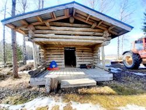
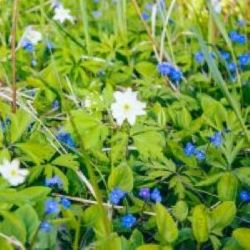
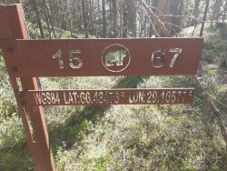
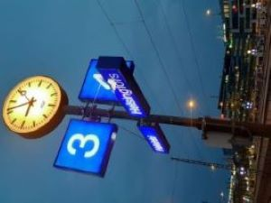
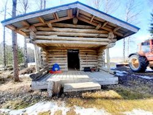
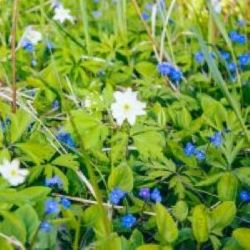
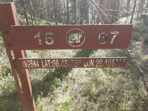
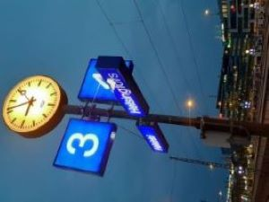

Työkokemusta minulla on monipuolisesti ravintola-alalta. Suurimmaksi osaksi hotelleista, mutta myös pienemmistä yrityksistä.
Harrastuksiini kuuluu valokuvaaminen ja luonnossa liikkuminen. Teen mielelläni luontokuvausta. Myös lemmikeistä on mukava ottaa kuvia.
Espanjaa olen opiskellut viitisen vuotta.
 






